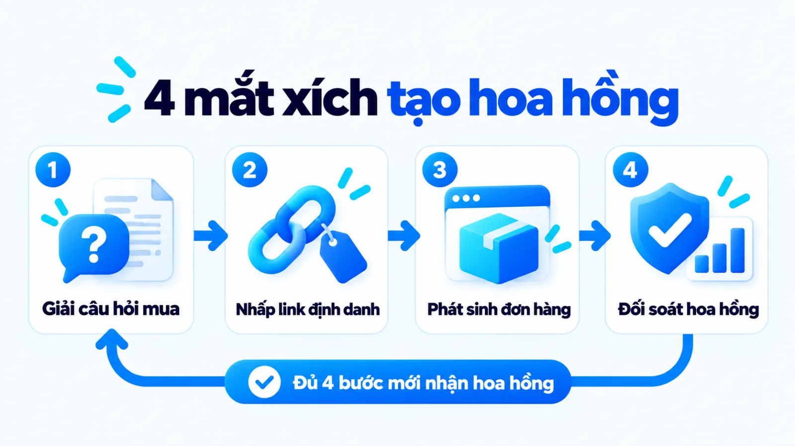
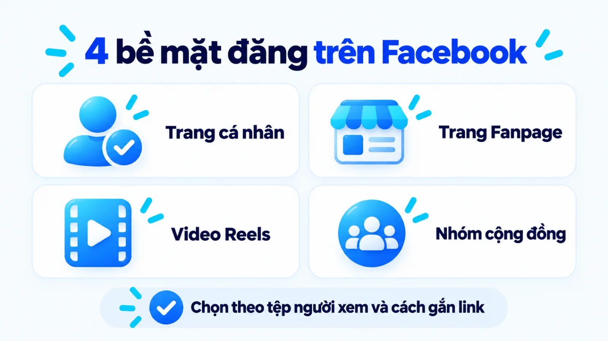
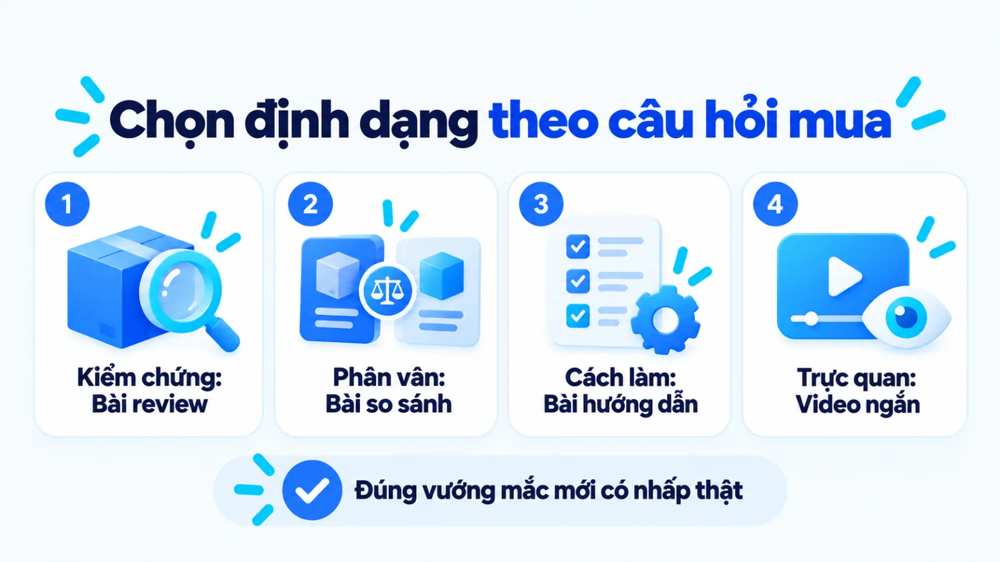
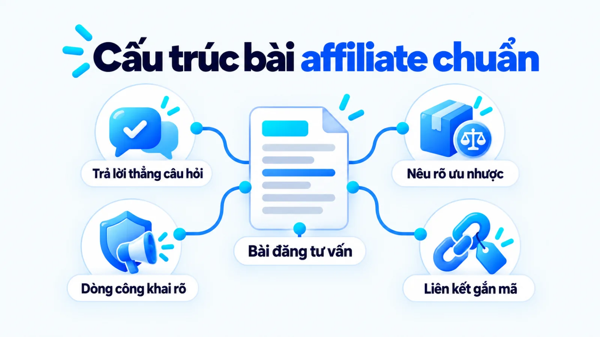
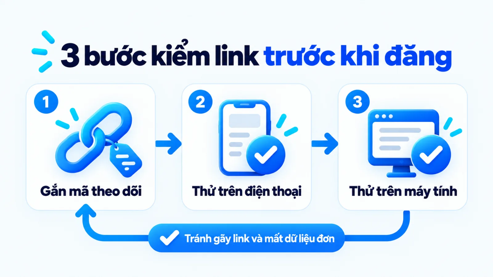
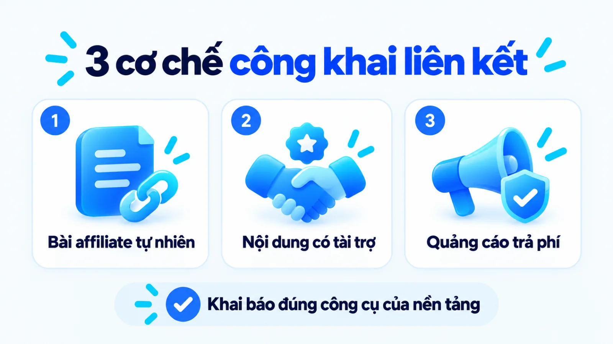
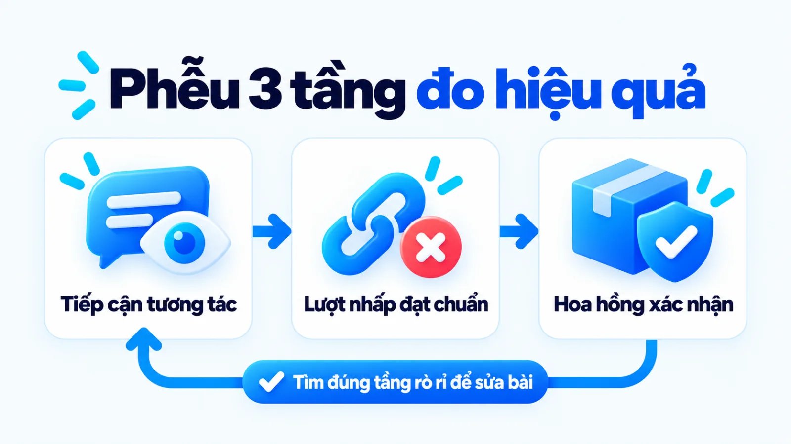

Affiliate content Facebook là gì, cách viết và đo
Affiliate content Facebook là nội dung đăng trên các bề mặt của Facebook nhằm giải đáp câu hỏi mua hàng, có gắn liên kết định danh hoặc thẻ sản phẩm để hệ thống ghi nhận hoa hồng khi phát sinh giao dịch hợp lệ theo điều khoản chương trình. Với đội ngũ có nguồn lực hạn chế, việc rải đường dẫn mua hàng hàng loạt khi chưa tháo gỡ vướng mắc của người đọc thường chỉ tạo ra lượt nhấp tò mò mà không mang lại đơn hàng hoàn tất. Khi đặt trọng tâm vào việc giúp người mua ra quyết định trước khi gắn liên kết, người phụ trách mới giữ được uy tín tài khoản và tạo ra chuyển đổi thực chất. Tôi là Lê Tuấn Việt, Marketing Leader tại TAKI Group. Trong bài viết này, tôi phân tích ranh giới giữa nội dung tiếp thị liên kết với các hình thức kiếm tiền khác trên nền tảng, tiêu chí chọn bề mặt đăng cùng định dạng bài viết và cách đo kết quả từ lượt nhấp đến hoa hồng xác nhận.
- Đăng ngày
- Cập nhật

Tóm tắt nhanh
- Affiliate content Facebook là nội dung giải quyết vướng mắc trước mua hàng có gắn liên kết theo dõi hoặc thẻ sản phẩm, khác với bài đăng bán hàng trực tiếp và chương trình trả tiền theo lượt xem của Meta.
- Doanh nghiệp vừa và nhỏ nên chọn một bề mặt đăng chủ lực cùng một định dạng nội dung khớp trực tiếp với câu hỏi mua hàng thay vì rải liên kết trên mọi kênh cùng lúc.
- Mỗi bài đăng cần công khai rõ mối quan hệ nhận hoa hồng ngay trước liên kết để tuân thủ Luật Bảo vệ quyền lợi người tiêu dùng 2023 và hướng dẫn minh bạch của nền tảng.
- Đánh giá hiệu quả phải tách bạch ba tầng gồm tín hiệu tương tác, lượt nhấp đạt chuẩn và hoa hồng thực nhận sau khi đã trừ đơn hủy hoặc hoàn trả hàng.
Mục lục bài viết8 phần
Affiliate content Facebook là gì?
Affiliate content Facebook (nội dung tiếp thị liên kết trên Facebook) là các bài viết, hình ảnh hoặc video đăng trên bề mặt của Facebook nhằm giải đáp câu hỏi mua hàng, có gắn liên kết theo dõi hoặc thẻ sản phẩm để nhận hoa hồng khi phát sinh giao dịch hợp lệ theo điều khoản chương trình.
Đặt trong hệ thống triển khai Content Marketing bài bản, hoạt động này dùng nội dung tư vấn để tháo gỡ rào cản thông tin trước khi dẫn người đọc sang trang đích của nhà cung cấp. Để nắm vững bản chất hình thức này, người phụ trách cần làm rõ ba khía cạnh gồm chuỗi bốn mắt xích ghi nhận hành động, điểm khác biệt với bài bán hàng trực tiếp và ranh giới với các công cụ kiếm tiền trên Meta.

Cơ chế từ nội dung đến hành động được ghi nhận
Một bài affiliate content vận hành qua chuỗi bốn mắt xích liên tiếp: người đọc tiếp cận nội dung giải quyết vấn đề trên Facebook, nhấp vào tracking link (liên kết theo dõi có mã định danh) hoặc thẻ sản phẩm, hoàn tất hành động mua tại trang đích và được hệ thống đối soát xác nhận. Nếu đứt một trong bốn mắt xích này, lượt xem cao vẫn không tạo ra doanh thu hoa hồng.
Điểm tôi muốn làm rõ là sự khác biệt giữa việc câu nhấp chuột tò mò và việc hỗ trợ quyết định mua. Khi dùng lời dẫn giật gân để kéo người xem bấm link, trang đích tuy có lượt truy cập lớn nhưng tỷ lệ thoát tăng vọt vì họ chưa có nhu cầu thật. Ngược lại, bài viết nêu rõ điều kiện phù hợp sẽ lọc đúng người cần mua trước khi nhấp chuột.
Affiliate content và bài đăng bán hàng thông thường
Người viết affiliate không giữ tồn kho, không quyết định giá bán và không xử lý khâu đóng gói hay đổi trả như bài bán hàng trực tiếp của chủ shop. Do đó, giá trị cốt lõi mà người làm nội dung đóng góp là góc nhìn đánh giá độc lập, khả năng tổng hợp trải nghiệm và việc chỉ ra giới hạn sử dụng mà mô tả của nhà sản xuất thường bỏ qua.
Khác biệt với Affiliate Partnerships và Monetization
Khi triển khai trên nền tảng của Meta, người phụ trách cần phân biệt rõ khái niệm nội dung tiếp thị liên kết nói chung với công cụ gắn thẻ sản phẩm tích hợp sẵn và chương trình chia sẻ doanh thu trên lượt xem nội dung. Bảng dưới đây đối chiếu các hình thức theo ba tiêu chí gồm bản chất vận hành, bài đăng bán hàng hoặc công cụ nền tảng và cơ chế ghi nhận doanh thu.
| Tiêu chí đối chiếu | Affiliate content Facebook | Hình thức dễ nhầm trên Facebook |
|---|---|---|
| So với bài bán hàng | Giới thiệu sản phẩm của đối tác qua liên kết định danh; nhận hoa hồng trên đơn hoàn tất hợp lệ | Bán hàng hóa do chính doanh nghiệp sở hữu; thu toàn bộ doanh thu và tự chịu chi phí tồn kho, vận hành |
| So với Partnerships | Bao gồm mọi bài có gắn link mạng lưới ngoài hoặc thẻ tích hợp để hướng dẫn người mua ra quyết định | Facebook Affiliate Partnerships là tính năng kỹ thuật giúp gắn thẻ sản phẩm của sàn đối tác vào bài |
| So với Monetization | Thu nhập phụ thuộc vào hành vi mua hàng hoặc đăng ký hợp lệ tại trang đích của nhà cung cấp | Facebook Content Monetization trả tiền trực tiếp từ Meta dựa trên lượt xem và tương tác đủ điều kiện |
Giới hạn khi đọc bảng: khả năng gắn thẻ sản phẩm trực tiếp hoặc đặt đường dẫn ngoài phụ thuộc vào điều khoản từng chương trình tiếp thị liên kết và các tính năng được mở trên tài khoản thực tế. Người phụ trách tại Việt Nam cần kiểm tra trực tiếp công cụ hiện có trong bảng điều khiển của tài khoản trước khi lên kế hoạch.
Nên đăng affiliate content ở bề mặt nào?
Việc chọn đăng affiliate content trên trang cá nhân, Fanpage, Reels (thước phim ngắn) hay Group (nhóm cộng đồng) phụ thuộc vào tệp độc giả sẵn có, cơ chế thuật toán phân phối và khả năng đặt liên kết không vi phạm quy định. Bốn bề mặt hiển thị chính trên Facebook hiện nay có điều kiện vận hành và mức độ đánh đổi khác nhau như bảng đối chiếu dưới đây.
| Bề mặt hiển thị | Mục tiêu và điều kiện phù hợp | Yêu cầu vận hành và đánh đổi |
|---|---|---|
| Trang cá nhân | Khai thác uy tín chuyên môn cá nhân; hợp với người đã có tệp bạn bè và người theo dõi tin tưởng | Gắn liền với hình ảnh cá nhân; giới hạn khả năng phân quyền cho nhiều nhân sự cùng quản lý |
| Fanpage | Xây dựng kênh thông tin thương hiệu dài hạn; cần phân quyền đội ngũ và kết hợp chạy quảng cáo | Thuận tiện gắn link và quản trị dữ liệu; tiếp cận tự nhiên ban đầu thấp nếu chưa có tệp độc giả nền |
| Thước phim Reels | Mở rộng tiếp cận tệp người xem mới thông qua video ngắn minh họa thao tác hoặc tình huống sử dụng | Khó bấm liên kết trực tiếp trong mô tả nếu tài khoản chưa mở thẻ sản phẩm; phải dẫn khách sang bình luận |
| Group cộng đồng | Giải đáp nhu cầu hỏi mua sâu theo từng ngách sản phẩm; người đọc đã có sẵn vấn đề cần tháo gỡ | Tỷ lệ đọc kỹ cao nhưng bài gắn link thương mại rất dễ bị quản trị viên từ chối nếu trái nội quy nhóm |
Giới hạn khi đọc bảng: hiệu quả của từng bề mặt phụ thuộc lớn vào lịch sử tương tác của tài khoản. Nếu đội ngũ của một SME (doanh nghiệp vừa và nhỏ) chỉ có một nhân sự phụ trách nội dung trong bốn tuần đầu, tôi ưu tiên chọn một bề mặt chủ lực có sẵn tệp người đọc quen thuộc thay vì dàn trải cả bốn nơi cùng một lúc.

Trang cá nhân và chế độ chuyên nghiệp
Khi triển khai trên trang cá nhân ở Professional mode (chế độ chuyên nghiệp), lợi thế lớn nhất của người viết là sự gần gũi và mức độ tin cậy của một tài khoản người thật. Người mua thường tin tưởng nhận xét sản phẩm từ một cá nhân có chuyên môn rõ ràng hơn là một trang cộng đồng ẩn danh mới thành lập.
Tuy nhiên, bề mặt này gắn chặt với hình ảnh cá nhân của người đứng tên tài khoản. Ngoại lệ đảo chiều xảy ra khi doanh nghiệp cần xây dựng tài sản truyền thông tách biệt khỏi một nhân sự cụ thể; lúc đó việc dồn toàn bộ nội dung tiếp thị liên kết vào tài khoản cá nhân sẽ gây rủi ro đứt gãy khi nhân sự nghỉ việc.
Fanpage và thước phim ngắn Reels
Fanpage kết hợp với định dạng Reels tạo ra cấu trúc bổ trợ giữa độ phủ rộng và chiều sâu thông tin trên cùng một tài khoản trang. Thước phim ngắn giúp thu hút sự chú ý của người chưa từng biết đến trang qua hình ảnh trực quan, còn các bài đăng văn bản kèm ảnh chi tiết trên Fanpage đảm nhiệm việc giải thích thông số và giữ liên kết chuyển đổi.
Điểm nghẽn thực tế nằm ở thao tác chuyển tiếp của người xem trên thiết bị di động. Khi xem Reels, người dùng có thói quen lướt nhanh và ít khi dừng lại mở phần bình luận để tìm đường dẫn mua hàng trừ khi video chỉ ra được một chi tiết kiểm chứng đủ thuyết phục khiến họ muốn tự tra cứu thêm.
Group và giới hạn của nội quy cộng đồng
Group cộng đồng tập trung những người có cùng mối quan tâm hoặc đang hỏi kinh nghiệm chọn mua sản phẩm trong một ngách hẹp, nhưng phần lớn nhóm chất lượng đều duyệt chặt bài chèn đường dẫn thương mại để tránh rác thông tin. Người viết chỉ nên gắn link trong Group do đơn vị mình quản trị hoặc khi nội quy nhóm cho phép chia sẻ liên kết giới thiệu minh bạch.
Chọn dạng affiliate content theo câu hỏi mua
Thay vì viết theo cảm hứng, người làm nội dung nên chọn một trong bốn định dạng gồm bài review (đánh giá thực tế), bài so sánh, bài hướng dẫn sử dụng hoặc video ngắn khớp trực tiếp với câu hỏi mà người mua đang vướng trước khi thanh toán. Bảng dưới đây phân loại bốn định dạng theo câu hỏi mua hàng cùng bằng chứng bắt buộc trên bài.
| Định dạng bài | Câu hỏi mua hàng trọng tâm | Bằng chứng cần có và ngoại lệ |
|---|---|---|
| Review thực tế | Sản phẩm này dùng ngoài đời có đúng như lời quảng cáo của hãng hay không | Ảnh hoặc video tự chụp, nêu rõ cả ưu điểm lẫn nhược điểm; không dùng khi chưa trải nghiệm thật |
| Bài so sánh | Giữa phương án A và phương án B trong cùng tầm giá thì nên chọn mẫu nào | Bảng tiêu chí đối chiếu trực tiếp và điều kiện chọn; không hợp nếu chỉ khen một bên để đẩy hàng |
| Hướng dẫn làm | Làm thế nào để giải quyết gọn công việc X bằng bộ công cụ phù hợp | Các bước thao tác cụ thể có kết quả trước và sau; sản phẩm xuất hiện tự nhiên như công cụ hỗ trợ |
| Video ngắn | Sản phẩm vận hành ra sao ở các thao tác đầu tiên khi xử lý tình huống thật | Cảnh quay cận cảnh thao tác không cắt ghép quá đà; khó thuyết phục với sản phẩm giá trị cao, phức tạp |
Giới hạn khi đọc bảng: một sản phẩm có thể cần nhiều định dạng nội dung khác nhau tùy theo độ phức tạp và mức giá. Với các mặt hàng tiêu dùng nhanh giá thấp, một video ngắn minh họa công dụng là đủ để người xem chốt đơn, nhưng thiết bị công nghệ hoặc phần mềm quản trị luôn cần bài so sánh thông số kỹ lưỡng hơn.

Review cho nhu cầu đánh giá mức độ phù hợp
Người đọc tìm đến bài đánh giá khi họ đã biết tên sản phẩm nhưng còn nghi ngờ về chất lượng thực tế hoặc sợ mua về không hợp nhu cầu riêng. Một bài review có giá trị chuyển đổi không phải là bài khen ngợi toàn diện, mà là bài khoanh vùng rõ sản phẩm này giải quyết tốt việc gì và sẽ gây bất tiện cho nhóm người dùng nào.
Theo hướng dẫn năm 2019 trong tài liệu Disclosures 101 for Social Media Influencers của Federal Trade Commission (FTC, Ủy ban Thương mại Liên bang Hoa Kỳ), người sáng tạo nội dung trên mạng xã hội khi có quan hệ tài chính như nhận hoa hồng qua liên kết tiếp thị liên kết hoặc nhận sản phẩm tặng phải công khai rõ mối liên hệ đó trong bài giới thiệu. Việc minh bạch lợi ích thương mại và chỉ rõ cả điểm hạn chế giúp người đọc tin tưởng hơn vào các ưu điểm của sản phẩm.
So sánh cho người đang cân nhắc lựa chọn
Khi người mua đã thu hẹp danh sách xuống còn hai hoặc ba sản phẩm cùng phân khúc, rào cản ngăn họ thanh toán là nỗi sợ chọn nhầm phương án kém tối ưu hơn. Lúc này, việc xác định đúng cách chọn content angle (góc tiếp cận nội dung) theo tiêu chí quyết định của người mua sẽ quyết định sức thuyết phục của toàn bộ bài.
Khi cần tìm câu hỏi người mua hay phân vân nhất, tôi ưu tiên lọc từ phần bình luận và các đánh giá ba sao trên sàn thương mại điện tử của chính nhóm sản phẩm đó. Thay vì chép lại bảng thông số kỹ thuật khô khan từ nhà sản xuất, bài so sánh nên đặt hai sản phẩm vào cùng một tình huống sử dụng để chỉ ra sự đánh đổi về chi phí, độ bền hoặc độ tiện dụng.
Hướng dẫn cho nhu cầu giải quyết công việc
Định dạng hướng dẫn tiếp cận nhóm độc giả đang tìm cách xử lý một vấn đề thực tế chứ chưa hề có ý định tìm mua một nhãn hiệu cụ thể. Khi bạn chỉ cho họ quy trình từng bước để hoàn thành công việc và đặt sản phẩm vào đúng bước cần công cụ hỗ trợ, liên kết tiếp thị liên kết sẽ xuất hiện như một gợi ý giúp tiết kiệm thời gian.
Để giữ mạch đọc tự nhiên, bài viết cần duy trì sự nhất quán về brand voice và tone of voice (giọng thương hiệu và sắc thái biểu đạt) của trang từ phần chia sẻ kiến thức sang phần giới thiệu sản phẩm. Nếu nửa đầu bài viết mang giọng chuyên môn điềm tĩnh nhưng đoạn cuối lại đổi sang giọng thúc giục mua hàng gấp gáp, người đọc sẽ lập tức bật tâm lý đề phòng.
Video ngắn cho tình huống cần minh họa
Video ngắn phát huy hiệu quả cao nhất với những sản phẩm có tính trực quan về hình dáng, chất liệu, âm thanh hoặc kết quả tức thì sau khi thao tác. Tuy nhiên, với dịch vụ tư vấn hoặc sản phẩm đòi hỏi đọc kỹ thành phần, người làm nội dung cần kết hợp thêm văn bản giải thích điều kiện sử dụng ở phần mô tả trước khi gắn link mua hàng.
Quy trình xây affiliate content Facebook từ đầu
Quy trình sản xuất một bài affiliate content Facebook có kiểm soát chất lượng gồm bốn bước tuần tự: chọn câu hỏi mua hàng kèm sản phẩm liên quan, kiểm tra bằng chứng và điều khoản chương trình, viết nội dung cùng lời công khai minh bạch, sau đó đăng thử để kiểm định liên kết. Bốn bước dưới đây giúp đội ngũ nhỏ chuẩn hóa đầu ra.

Bước 1: Chọn câu hỏi mua và sản phẩm liên quan
Bắt đầu bằng việc viết ra một câu hỏi cụ thể mà khách hàng mục tiêu đang tìm lời giải, sau đó chọn sản phẩm có khả năng xử lý trọn vẹn câu hỏi đó trong tầm ngân sách của họ. Kiểm tra ngay xem nhà cung cấp có chương trình tiếp thị liên kết đang hoạt động ổn định và uy tín gian hàng có đảm bảo hay không.
Đầu ra: bản tóm tắt gồm một câu hỏi mua hàng, điều kiện phù hợp của sản phẩm và đường dẫn gốc của chương trình affiliate hợp lệ.
Bước 2: Kiểm tra bằng chứng và điều khoản
Đối chiếu thông số kỹ thuật thực tế của sản phẩm và đọc kỹ quy định trả thưởng của mạng lưới tiếp thị liên kết trước khi đặt bút viết. Theo Điều khoản Chương trình Tiếp thị liên kết Shopee năm 2024 tại thị trường Việt Nam, tiền hoa hồng chỉ được tính cho giao dịch mua hàng hoàn thành hợp lệ và loại trừ các đơn hủy, trả hàng, hoàn tiền hoặc tự đặt qua liên kết của chính mình.
Đầu ra: phiếu ghi chú các thông số đã xác thực của sản phẩm kèm điều kiện tính và loại trừ hoa hồng của đúng chương trình đang tham gia.
Bước 3: Viết nội dung, lời công khai và CTA
Soạn bài viết theo cấu trúc trả lời thẳng câu hỏi mua hàng ở mở đầu, đưa bằng chứng thực tế ở phần thân, nêu rõ giới hạn sản phẩm và đặt lời công khai ngay trước CTA (lời kêu gọi hành động). Thay vì thúc giục bấm link xem hàng giá rẻ, hãy ghi rõ trang đích mở ra gian hàng nào và người đọc cần kiểm tra thông tin gì tại đó.
Đầu ra: bản nháp nội dung hoàn chỉnh kèm hình ảnh hoặc video gốc, có câu công khai hoa hồng và lời dẫn mô tả đúng trang đích.
Bước 4: Đăng thử, kiểm tra link và ghi dữ liệu
Theo hướng dẫn năm 2025 của Google Analytics Help, người làm marketing có thể gắn tham số UTM (Urchin Tracking Module, mã theo dõi nguồn chiến dịch) như utm_source, utm_medium và utm_campaign hoặc Sub_ID (mã định danh phụ) vào URL đích để phân biệt lưu lượng từng bài trong Google Analytics 4 (GA4, công cụ phân tích website của Google). Sau đó, hãy đăng thử và bấm kiểm tra liên kết trên cả điện thoại lẫn máy tính.
Đầu ra: bài đăng hiển thị đúng định dạng, liên kết chuyển hướng mượt không báo lỗi và mã bài đã được ghi vào bảng theo dõi tuần.
Ví dụ biên tập, không phải kết quả khách hàng thật
Cửa hàng dụng cụ pha chế thử nghiệm chuỗi bài hướng dẫn affiliate
Ví dụ biên tập, không phải kết quả khách hàng thật: một cửa hàng nguyên liệu pha chế tại Hà Nội muốn giới thiệu thêm cân điện tử trên Fanpage khi chỉ có một nhân sự nội dung. Thay vì rải link hàng ngày, nhân sự này viết bài hướng dẫn định lượng cà phê kèm ảnh chụp thật và mã theo dõi riêng mỗi tuần, giúp xác định rõ bài nào tạo đơn hoàn tất sau đối soát.

Cách đặt liên kết và công khai tiếp thị liên kết
Đặt liên kết minh bạch đòi hỏi người viết báo rõ trang đích sẽ mở ra đâu, công khai việc nhận hoa hồng ngay trước liên kết và tuân thủ quy định nền tảng lẫn pháp luật. Ba nội dung giúp bảo vệ tài khoản dưới đây gồm thông tin người đọc cần biết trước khi nhấp, cách phân biệt ba trường hợp khai báo trên Facebook và năm điểm kiểm tra chính sách trước khi đăng.
Thông tin người đọc cần biết trước khi nhấp
Mỗi khi nhấp vào một đường dẫn ra ngoài Facebook, người dùng phải chuyển từ môi trường mạng xã hội sang trình duyệt trung gian hoặc ứng dụng mua sắm. Trong thực tế vận hành, người đọc sẵn sàng ủng hộ người viết khi được báo trước trang đích sẽ mở ra sàn nào và hiểu rằng khoản hoa hồng trích từ ngân sách của nhà bán hàng chứ không cộng thêm vào giá mua của khách.
Phân biệt bài tự nhiên, hợp tác và quảng cáo
Người phụ trách nội dung cần tách biệt ba trường hợp vận hành trên Facebook để dùng đúng công cụ khai báo. Trường hợp đầu tiên là khi người viết tự lấy liên kết từ mạng lưới tiếp thị liên kết công khai mà không có thỏa thuận tài trợ riêng với nhãn hàng, lúc này bạn cần ghi câu thông báo nhận hoa hồng rõ ràng trong văn bản bài đăng.
Trường hợp thứ hai là khi có hợp đồng nhận thù lao, sản phẩm miễn phí hoặc hoa hồng trực tiếp từ đối tác kinh doanh. Theo chính sách nội dung có thương hiệu năm 2025 của Meta Business Help Center áp dụng toàn cầu cho bài đăng trên trang và hồ sơ chuyên nghiệp, nhà sáng tạo bắt buộc phải gắn nhãn quan hệ hợp tác trả phí bằng công cụ của nền tảng.
Trường hợp thứ ba là khi doanh nghiệp hoặc nhà sáng tạo chạy quảng cáo trả phí cho bài viết có gắn liên kết. Lúc này, nội dung vừa phải tuân thủ quy định công khai quan hệ thương mại, vừa phải đáp ứng tiêu chuẩn quảng cáo của Meta về tính xác thực của tuyên bố sản phẩm và trang đích chuyển đổi.

Danh sách kiểm tra chính sách trước khi đăng
Tại Việt Nam, khoản 3 Điều 22 Luật Bảo vệ quyền lợi người tiêu dùng số 19/2023/QH15 quy định người có ảnh hưởng khi giới thiệu sản phẩm, dịch vụ phải thông báo trước cho người tiêu dùng về việc mình được tài trợ và chịu trách nhiệm bảo đảm thông tin chính xác. Kết hợp với quy tắc đặt lời công khai ở vị trí khó bỏ lỡ của FTC, năm điểm cần kiểm tra trước khi xuất bản bài affiliate content gồm:
- Vị trí lời công khai: Đặt thông báo nhận hoa hồng hoặc tài trợ ngay trước đường dẫn mua hàng, không giấu sau nút xem thêm hay chôn giữa hàng chục thẻ hashtag.
- Ngôn từ thông báo rõ nghĩa: Dùng cụm từ tiếng Việt trực diện như liên kết tiếp thị liên kết hoặc bài viết có nhận hoa hồng thay vì viết tắt khó hiểu với người đọc.
- Công cụ gắn nhãn nền tảng: Bật thẻ quan hệ hợp tác trả phí trên Facebook nếu bài đăng có sự tài trợ sản phẩm, chi phí hoặc chịu sự kiểm duyệt nội dung từ nhãn hàng.
- Tính xác thực của thông tin: Mọi thông số, công dụng và điều kiện bảo hành nêu trong bài phải khớp với tài liệu công bố chính thức của nhà cung cấp tại thời điểm viết.
- Mô tả trước trang đích: Ghi rõ tên sàn thương mại điện tử hoặc tên miền website sẽ mở ra kèm lưu ý mức giá có thể thay đổi theo chương trình khuyến mãi từng thời điểm.
Cách đo hiệu quả affiliate content Facebook
Đo lường hiệu quả affiliate content Facebook đòi hỏi tách bạch ba tầng dữ liệu gồm tín hiệu tiếp cận và tương tác trên bề mặt đăng, lượt nhấp liên kết hoặc hành động đạt chuẩn trung gian, và số đơn hàng hoàn thành kèm hoa hồng thực nhận sau đối soát. Bảng dưới đây trình bày khung đo lường ba tầng cùng giới hạn khi đọc số liệu.
| Tầng đo lường | Chỉ số và nguồn dữ liệu | Giới hạn khi đọc và hành động |
|---|---|---|
| Tầng tương tác | Lượt hiển thị, lượt xem video ngắn, bình luận và lưu bài trong Meta Business Suite | Cho biết sức hút của chủ đề và câu mở đầu; không phản ánh ý định mua hay doanh thu hoa hồng |
| Tầng nhấp chuẩn | Lượt nhấp liên kết định danh gắn mã phụ (Sub_ID) hoặc mã UTM và lượt xem trang sản phẩm trên báo cáo đối tác | Lượt nhấp cao nhưng thoát nhanh cho thấy lời dẫn lệch kỳ vọng hoặc trang đích tải chậm, giá lệch |
| Tầng hoa hồng thực | Số đơn hàng hoàn tất hợp lệ và tiền hoa hồng được duyệt sau kỳ đối soát của chương trình | Có độ trễ từ vài tuần đến hơn một tháng do chờ giao hàng thành công và trừ đơn hủy, hoàn trả |
Giới hạn khi đọc bảng: dữ liệu giữa báo cáo của Facebook và hệ thống tiếp thị liên kết luôn có độ lệch nhất định do khác biệt về cách đếm phiên truy cập. Người phụ trách cần cố định một kỳ đo theo tuần hoặc theo tháng để theo dõi xu hướng chuyển dịch giữa ba tầng thay vì so sánh tuyệt đối từng lượt nhấp trong ngày.

Tín hiệu tiếp cận và tương tác trên bề mặt đăng
Các chỉ số ở tầng đầu tiên trả lời câu hỏi bài viết có chạm được tới đúng nhóm độc giả mục tiêu và giữ họ dừng lại đọc hết lập luận hay không. Trong thực tế vận hành, tín hiệu tương tác chỉ dùng để tối ưu câu mở đầu và định dạng hiển thị, không dùng làm căn cứ đánh giá hiệu quả thương mại của bài viết.
Lượt nhấp và hành động đạt chuẩn trung gian
Tầng thứ hai đo lường bước chuyển tiếp từ người đọc nội dung sang người tìm hiểu sản phẩm tại trang đích. Những thao tác như bấm mở liên kết, xem bảng thông số chi tiết hoặc thêm hàng vào giỏ đóng vai trò là micro conversion (chuyển đổi vi mô) và hành động đạt chuẩn giúp đội ngũ khoanh vùng điểm gãy trước khi khách thanh toán.
Khi tầng thứ nhất cao nhưng tầng thứ hai rất thấp, người viết cần kiểm tra lại vị trí đặt liên kết và lời kêu gọi hành động. Để bổ sung góc nhìn định tính, bạn có thể thu thập zero-party data và first-party data (dữ liệu khách chủ động chia sẻ và dữ liệu tự thu thập từ tương tác trực tiếp) qua câu hỏi thăm dò ngay dưới bài.
Đơn hàng hoặc hoa hồng đã được xác nhận
Tầng thứ ba là thước đo hiệu quả kinh doanh cuối cùng dùng để quyết định có nên tiếp tục đầu tư thời gian cho nhóm sản phẩm đó hay không. Theo Amazon Associates Program Policies năm 2024 cũng như điều khoản của các mạng lưới lớn, mọi đơn hàng phát sinh qua liên kết nhưng sau đó bị hủy, trả hàng hoặc hoàn tiền đều bị loại khỏi thu nhập thực nhận.
Do đó, báo cáo tuần của đội ngũ cần tách riêng hai cột gồm hoa hồng tạm tính (ghi nhận ngay khi khách đặt đơn) và hoa hồng đã xác nhận (sau khi hoàn tất giao hàng và hết hạn đổi trả). Chỉ con số đã xác nhận mới được dùng để tính hiệu suất đầu tư nội dung của doanh nghiệp.
Giới hạn quy kết, dark social và đơn bị hủy
Một thách thức lớn khi làm affiliate trên mạng xã hội là hành vi mua hàng đứt đoạn giữa nhiều thiết bị và ứng dụng. Nhiều người đọc hết bài phân tích trên Facebook nhưng không bấm vào liên kết ngay, mà chụp màn hình hoặc gửi tên sản phẩm qua tin nhắn riêng tư rồi mới mở ứng dụng sàn để tự tìm mua.
Hiện tượng này thuộc phạm vi dark social (lưu lượng chia sẻ qua kênh riêng tư khó định danh) và giới hạn quy kết nguồn, khiến một phần đóng góp thực tế của bài viết không được ghi nhận vào liên kết theo dõi.
Nguyên tắc đọc bảng theo dõi tuần cho đội ngũ nhỏ
Đội ngũ nhỏ không cần hệ thống báo cáo phức tạp để bắt đầu. Một bảng tính ghi rõ mã bài đăng, bề mặt hiển thị, dạng nội dung, lượt nhấp hợp lệ và đơn hoàn tất sau đối soát mỗi tuần là đủ để nhận diện quy luật. Khi sản phẩm có nhiều lượt nhấp nhưng tỷ lệ hủy đơn lặp lại liên tục, hãy dừng giới thiệu để bảo vệ uy tín kênh.
Câu hỏi thường gặp về affiliate content Facebook
Tài khoản cá nhân có gắn được thẻ sản phẩm affiliate không?
Có, bạn vẫn triển khai được affiliate content trên tài khoản cá nhân bằng cách đặt liên kết theo dõi hợp lệ kèm lời công khai rõ ràng trong bài viết hoặc phần bình luận. Với tính năng gắn thẻ sản phẩm trực tiếp trên bài đăng, khả năng sử dụng phụ thuộc vào trạng thái mở tính năng của nền tảng cho từng tài khoản ở thời điểm kiểm tra.
Đặt link affiliate ở bình luận có giảm hiển thị không?
Không có con số cố định từ Meta về mức giảm hiển thị khi đặt liên kết ở phần mô tả so với phần bình luận, vì phân phối phụ thuộc vào tương tác và trải nghiệm đọc thực tế. Người làm nội dung nên thử nghiệm cả hai vị trí trên cùng tệp độc giả và gắn mã theo dõi riêng để đo xem cách nào tạo ra nhiều lượt nhấp hợp lệ hơn.
Vì sao số lượt nhấp trên Facebook lệch với báo cáo hoa hồng?
Số lượt nhấp trên Facebook luôn cao hơn vì bao gồm cả thao tác bấm nhầm, trình thu thập dữ liệu hoặc người dùng thoát trang trước khi ứng dụng sàn tải xong. Trong khi đó, báo cáo hoa hồng xác nhận chỉ tính các đơn hàng hoàn tất sau khi đã trừ đơn hủy, trả hàng hoàn tiền hoặc giao dịch ngoài thời hạn lưu dữ liệu.
Dùng lại video của nhãn hàng gắn link affiliate được không?
Không, bạn không nên tự ý tải lại video của nhãn hàng hoặc nhà sáng tạo khác khi chưa có quyền sử dụng rõ ràng vì dễ vi phạm bản quyền và tiêu chuẩn nội dung gốc của Meta. Ngay cả khi được nhãn hàng cấp tư liệu, người viết vẫn cần bổ sung hình ảnh thực tế, bối cảnh sử dụng hoặc góc phân tích riêng để giữ độ tin cậy.
Khi nào nên sửa hoặc dừng một bài affiliate content?
Bạn nên sửa câu mở đầu và vị trí đặt lời kêu gọi hành động khi bài đăng có lượt tiếp cận tốt nhưng tỷ lệ nhấp vào liên kết rất thấp. Ngược lại, hãy dừng bài viết hoặc thay sản phẩm khi bài có nhiều lượt nhấp nhưng tỷ lệ hủy đơn, hoàn trả cao hoặc sản phẩm ngừng kinh doanh, đổi chính sách hoa hồng.
Doanh nghiệp nhỏ ít vốn nên thử affiliate từ dạng bài nào?
Doanh nghiệp nhỏ nên bắt đầu bằng bài hướng dẫn giải quyết một công việc cụ thể hoặc bài so sánh hai đến ba lựa chọn phổ biến dưới dạng văn bản kèm ảnh chụp thực tế. Hai định dạng này đăng trên Fanpage hoặc trang cá nhân chuyên nghiệp tốn ít chi phí dựng phim nhưng giải đáp đúng vướng mắc của người có ý định mua cao.
Kết luận
Hiệu quả của affiliate content Facebook không nằm ở mật độ rải đường dẫn mà nằm ở khả năng giải quyết trọn vẹn một câu hỏi mua hàng cụ thể trên đúng bề mặt hiển thị, kèm lời công khai minh bạch và phép đo tách bạch ba tầng. Ba lựa chọn khởi đầu theo điều kiện nguồn lực thực tế dành cho doanh nghiệp vừa và nhỏ gồm:
- Nhân sự mỏng, ít thời gian: Tập trung vào trang cá nhân hoặc Fanpage sẵn có, đều đặn đăng bài hướng dẫn và so sánh kèm ảnh chụp thực tế hàng tuần.
- Có khả năng quay dựng cơ bản: Kết hợp Reels minh họa thao tác sản phẩm ngắn gọn để mở rộng tiếp cận, dẫn người xem về bài phân tích chi tiết có gắn link theo dõi.
- Đã có website hoặc kênh riêng: Gắn tham số UTM và mã Sub_ID cho từng bài đăng để đối chiếu hành vi trung gian trên GA4 với báo cáo hoa hồng xác nhận hàng tháng.
Ngay trong tuần này, bạn có thể chọn ra ba câu hỏi mà khách hàng hay thắc mắc nhất trước khi mua, kiểm tra lại điều khoản chương trình affiliate của sản phẩm tương ứng và lập một bảng theo dõi tách riêng lượt nhấp với đơn hoàn tất.
Khi doanh nghiệp cần kết nối hoạt động nội dung tiếp thị liên kết vào tổng thể phễu chuyển đổi và hệ thống đo lường đa kênh trong chuyên mục Marketing, bài toán sẽ vượt khỏi phạm vi tối ưu từng bài đăng lẻ. Đội ngũ của bạn đang vướng ở khâu chọn góc viết thuyết phục người mua hay ở bước thiết lập khung đo lường chuyển đổi thực tế?